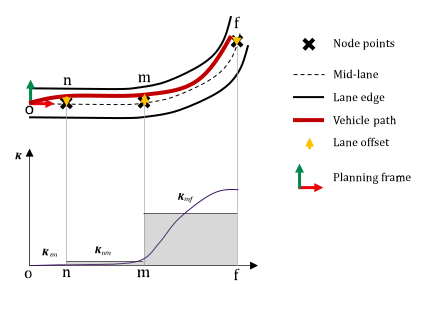
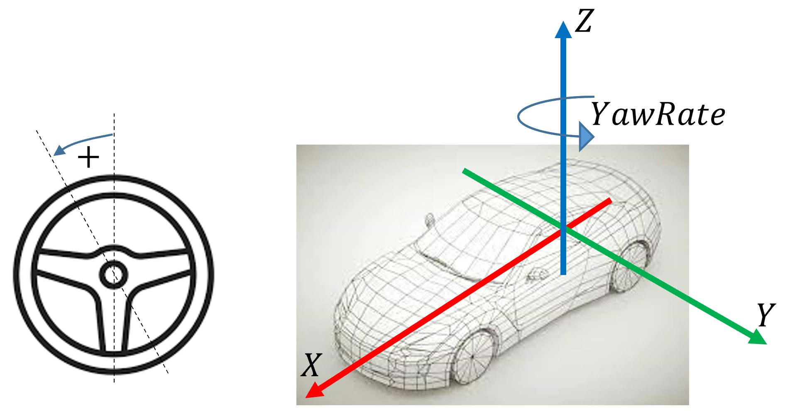
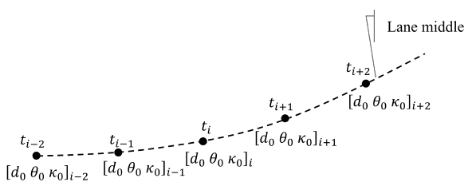
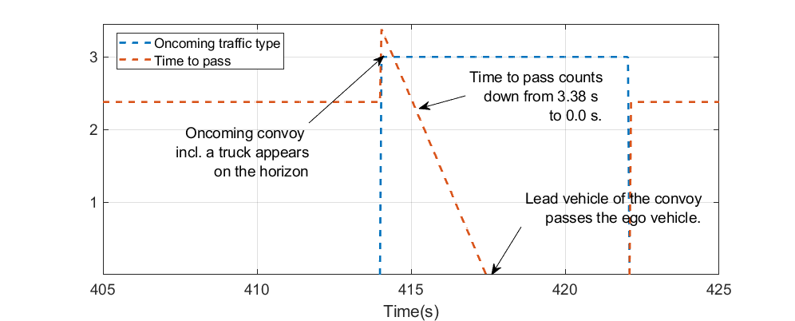
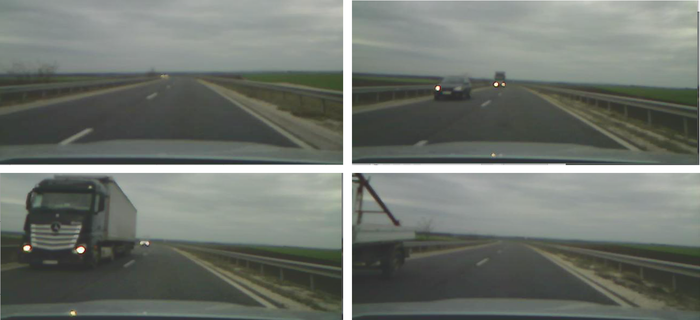

jkk_dataset_03
This dataset contains the raw data of naturalistic driving, utilized for Human-Like Behavior studies of Automated Vehicles (HLB4AV).

The zipped measurements can be downloaded from the following link.
Download from here.
To access the original files, along with the labelling traffic data, click here:
Access data.
The data contains information of 17 drivers, who were selected to have relevant driving experience. Dr001-Dr003 are professional drivers who have extra driving certificate. The following table shows the details of participants:
| Driver ID | Type | Age | Driving Experience | Driving Frequency | Milage per year |
|---|---|---|---|---|---|
| 001 | P | 31 | 10+ | 3 | 4 |
| 002 | P | 32 | 10+ | 3 | 4 |
| 003 | P | 28 | 10+ | 3 | 5 |
| 004 | N-P | 31 | 10+ | 4 | 5 |
| 005 | N-P | 46 | 10+ | 4 | 4 |
| 006 | N-P | 25 | 6-10 | 2 | 2 |
| 007 | N-P | 29 | 10+ | 3 | 3 |
| 008 | N-P | 28 | 3-6 | 2 | 3 |
| 009 | N-P | 28 | 1-3 | 1 | 2 |
| 010 | N-P | 43 | 10+ | 4 | 4 |
| 011 | N-P | 31 | 10+ | 3 | 3 |
| 012 | N-P | 44 | 10+ | 3 | 3 |
| 013 | N-P | 52 | 10+ | 4 | 4 |
| 014 | N-P | 36 | 10+ | 4 | 5 |
| 015 | N-P | 32 | 10+ | 3 | 4 |
| 021 | N-P | 51 | 10+ | 4 | 5 |
| 023 | N-P | 39 | 10+ | 2 | 3 |
Explanation to notations:
- P: Professional, N-P: Non-Professional
- Driving Frequency: 1: few times a year, 2: few times a month, 3: few times a week, 4: every day.
- Driving Milage per year: 1: 0-1000km, 2: 1000-3000km, 3: 5000-10000km, 4: 10000-25000km, 5: more than 25000km.
The dataset uses the following coordinate system of the vehicle:

Even though the data is recorded considering only two dimensional movement, the Z axis is displayed to give the right explanation of the yaw rate signal. Always, positive direction of a rotational quantity means CCW direction.
Reference Platform¶
Data was recorded using two different vehicle platforms.
The reference platform is a dedicated test vehicle, equipped with multiple environment sensors, also with direct access to the CAN network of the vehicle. The type of the vehicle is a Volkswagen Golf VII Variant, with a 1.4 TSI engine and 7-shift automatic gearbox.
There are various sensor devices in this vehicle:
- Genesys ADMA Gen3 (DGPS), source: ADMA 3.0 Technical Documentation, Document revision: 1.9, Date: 02/2019. Device includes the sensing of vehicle kinematic states.
- Bosch Second Generation Multi-Purpose Camera (MPC2.5), including lane edge detection.
- Bosch Fourth Generation Radar sensor, including object detection in ego lane and the two neighbouring lanes.
- CAN data, steering torque and steering angle values.
Reference Platform was used for measurements with Driver 1, 2 and 3 (professional drivers).
Test Platform¶
The test platform is a vehicle which is used when nonprofessional drivers are measured. The test vehicle is a Skoda Octavia MK3, with automatic gearbox. The vehicle systems were not modified, and no driver-assistance function was activated during testing. This vehicle was only equipped with the Genesys ADMA Gen3 (DGPS) device. The lane position information was reconstructed from the static lane map and the localization of the vehicle.
Offline Calculations¶
Static Lane Map¶
Based on the reference measurements, the lane map of the test route was created. For this, the lane position provided by the video camera was used. The lane position accuracy has +/- 2cm, while the localization has accuracy of +/- 1 cm.

The camera provides information of the position of the lane edges at each sample time. The following information are provided:
- lane position ($d$)
- lane orientation ($\Theta$)
- lane curvature ($\kappa$).
These data are then interpolated to a resolution of 5 cm travel distance through the route, using MATLAB function spline. Also, the lane edge position are transformed to the global UTM coordinates considering the pose of the vehicle.
In the end, the map data contains high resolution geometry of the lane edges and also the higher level geometrical quantities (orientation and curvature).
Lane Reconstruction¶
For the test platform, the static lane map information is transferred back to the vehicle coordinate frame at each time sample. This replaced the video camera information, therefore the lane position of the test vehicle is available, with an accuracy of +/- 3 cm. Unfortunately, the dynamic information (e.g., other objects in the lane) are not available for the test platform.
Dash-cam data¶
For multiple drivers' data (currently noted by "_withTraffic" tag in the file name) a dash cam video is available. This video is not applicable to use for e.g., computer vision algorithms, but serve more as an informal source of traffic data.
However, by manual labelling the following information were added to the data:
1. Oncoming traffic time to pass: when a vehicle appears on the camera image, a timer starts to count down from a certain initial value, until the vehicle passes the test vehicle. Initial value is 2.38 seconds for small vehicles (higher preceeding speed) and 3.38 seconds for trucks (lower preceeding speed). Times were calculated based on the experiments. When there is no oncoming traffic detected, time-to-pass is set to 2.38 seconds, reflecting the fact that a vehicle may turn up in any minute. Therefore, drivers are assumed to be prepared as there would already be oncoming traffic. When a vehicle is followed, the initial value is decreased to the half for both types of vehicles.
2. Oncoming traffic type: 0: no oncoming traffic, 1: small vehicle, 2: truck and 3: convoy.
An example of a convoy, passing the ego vehicle is shown here:

The same scenario on the dash cam video (snippets cut by hand):

Please be noted, that this information is added manually, therefore not suitable for quantitative evaluation, only qualitative!
Summary of Signals¶
| Signal Name | Description | Unit | Range | Availability | Source |
|---|---|---|---|---|---|
| VelocityX | Longitudinal velocity of the vehicle | m/s | 0 - 40 | both platforms | ADMA |
| SteeringTorque | Torque applied by the driver on the steering wheel | Nm | +/-3 | reference platforms | CAN |
| LaneOrientation | Orientation of the mid-lane in the ego frame (positive: CW, negative: CCW) | rad | +/- 0.1 | both platforms | Camera |
| LaneEdgePositionRight | Position of the lane edge of the ego lane on right side (positive: left, negative: right) | m | +/- 2 | both platforms | Camera |
| LaneEdgePositionLeft | Position of the lane edge of the ego lane on left side (positive: left, negative: right) | m | +/- 2 | both platforms | Camera |
| LaneCurvature | Curvature of the lane in the vehicle position | 1/m | +/- 0.005 | both platforms | Camera |
| ObjectDistanceFront | Distance of the vehicle in the ego lane (if no vehicle is present, value is zero) | m | 0-250 m | reference platforms | Radar |
| ObjectVelocityFront | Absolute velocity of the vehicle in the ego lane (if no vehicle is present, value is zero) | m/s | 0-40 | reference platforms | Radar |
| ObjectAccelerationFront | Absolute acceleration of the vehicle in the ego lane (if no vehicle is present, value is zero) | m/s^2 | +/- 10 | reference platforms | Radar |
| YawRate | Yawrate of the vehicle around the Z axis | rad/s | +/- 0.1 | both platforms | ADMA |
| AccelerationX | Longitudinal acceleration of the vehicle | m/s^2 | +/- 10 | both platforms | ADMA |
| AccelerationY | Longitudinal acceleration of the vehicle | m/s^2 | +/- 10 | both platforms | ADMA |
| RoadWheelAngleFront | Road-wheel-angle of the front wheels | rad | +/- 0.1 | reference platforms | CAN |
| GPS_time | Global GPS time | ms | - | both platforms | ADMA |
| GPS_status | Global GPS status | enum | 1: GPS, 2: RTK float, 4: RTK_course, 8: RTK_Fixed | both platforms | ADMA |
| LongPos_abs | Global longitudinal position of the vehicle | ° | - | both platforms | ADMA |
| LatPos_abs | Global lateral position of the vehicle | ° | - | both platforms | ADMA |
| Relative_time | Relative time stamp to the beginning of the measurement | s | - | both platforms | ADMA |
The data is recorded in every 10 ms. Localization information is available at every 50 ms.
GitHub repo¶
The following repository contains algorithms for driver model analysis and prototypes for ADAS functions endowed with human-like features.
The following scripts are used for the data process:
- Lane reconstruction from reference data: Run segmentor profile "MapValidation" and evaluator profile "MapValidation", based on this description:
Place the raw mat files (without the map data) into the _temp folder.
- Traffic information for which dash-cam video is available:
In this case, you shall define the path of the corresponding xlsx file that contains the relevant traffic information.
- Standardize names for the proper storing:
- Merge data for drivers where multiple short runs are available:
For this script, you shall also store all unmerged data in the _temp folder.